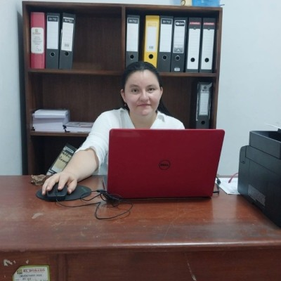

Gestión de TI
Elaboración de documentación de gestión y soporte tecnológico.
Ingeniera de Sistemas · Gestión pública · Ciberseguridad
Una trayectoria dedicada a conectar la tecnología con las personas y el servicio público.
Conoce mi historia
01 / Mi historia
Nací en Chiclayo y crecí entre la costa y la selva peruana. Mi camino me llevó de las aulas a la Ingeniería de Sistemas y, más adelante, a proyectos de tecnología y gestión en instituciones públicas de San Martín.
Mi experiencia como docente y mi trabajo con programas sociales me enseñaron que cada sistema y cada decisión tienen un impacto concreto en la vida de las personas. Esa convicción orienta mi interés por la gestión de riesgos, la transformación digital y la ciberseguridad.
Hoy sigo aprendiendo y aportando a iniciativas que fortalecen las instituciones y acercan los servicios a la ciudadanía.
02 / Experiencia
Más de diez años de experiencia en el sector público, la educación y la tecnología.
Elaboración de documentación de gestión y soporte tecnológico.
Análisis de riesgos y propuesta de medidas de control en la Municipalidad Provincial de El Dorado.
Impulso del gobierno digital, datos abiertos y herramientas tecnológicas en la Municipalidad Provincial de El Dorado.
Enseñanza y gestión educativa en la UGEL El Dorado, San Martín.
Trabajo en SISFOH, soporte técnico, secretaría general y portal de transparencia en la Municipalidad Distrital de San Martín.
Resultados que me motivan
He contribuido al cumplimiento integral de las metas del Plan de Incentivos durante más de ocho años y al incremento de los recursos del Fondo de Compensación Municipal asignados a la entidad.
Como subgerente de Tecnologías de Información, Comunicación e Imagen, participé en la implementación del gobierno digital por la que la entidad recibió un oficio de felicitación del gobierno central.
Coordiné un equipo de 24 agentes comunitarios que registraban visitas mediante una aplicación móvil. Contribuimos a reducir la anemia en niños y gestantes y dotamos de utensilios para sesiones demostrativas de alimentación a establecimientos de salud y espacios comunales.
Impulsé el empadronamiento de hogares omitidos para facilitar que los programas sociales llegaran a quienes más los necesitaban y contribuir al cumplimiento de metas de la entidad.
Durante más de cinco años asumí la coordinación del Sistema de Control Interno en adición a mis funciones. Analicé riesgos antes y después de la prestación de servicios; la implementación municipal obtuvo una de las mejores calificaciones de la región por parte de la Contraloría General de la República. También compartí esta experiencia con otros gobiernos locales.
Como docente de niños durante más de tres años, apoyé sus aprendizajes, el cumplimiento de documentos de gestión y las metas vinculadas a bonos estatales para docentes.
Innovación y aprendizaje continuo. He participado en iniciativas de inteligencia artificial aplicada a la salud, inteligencia artificial y análisis de datos con Power BI, así como en formación sobre control interno, presupuesto público, recursos humanos y administración pública. También participé en un proyecto de rendición de cuentas basado en documentos de gestión e indicadores del PEI y POE.
Comunidades profesionales. He formado parte de IEEE, AWS y WomenCISO; actualmente participo en ASICE y WICE-OEA, y en actividades de aprendizaje y certificación vinculadas con CERTIPRO e ISC2.
03 / Aprendizaje
Universidad Señor de Sipán. Bachillerato y título profesional.
Estudios de maestría en la Universidad César Vallejo.
Executive MBA en Recursos Humanos, Educational Format Business School, España.
Estudios de maestría en Saint Leo University, Estados Unidos, según el currículo proporcionado.
Formación complementaria: ISO 27001, respuesta a incidentes, gestión de riesgos digitales, informática forense, confianza digital, redes, nube y gobierno abierto.
04 / Contacto
Si te interesa colaborar en iniciativas de tecnología, seguridad o gestión pública, puedes escribirme.
Enviar un correo